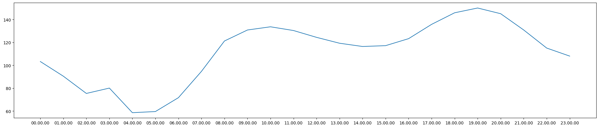
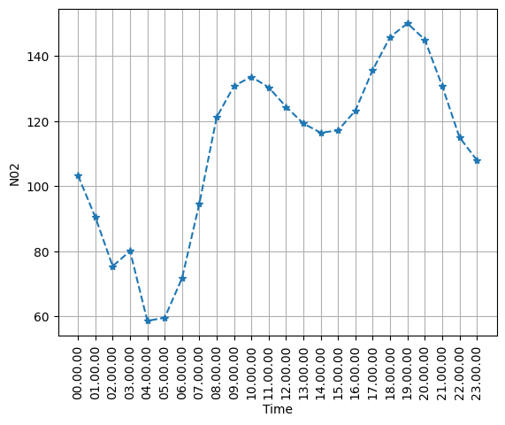
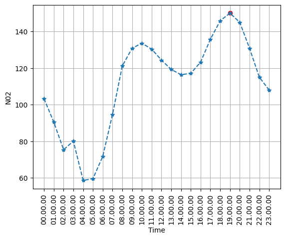
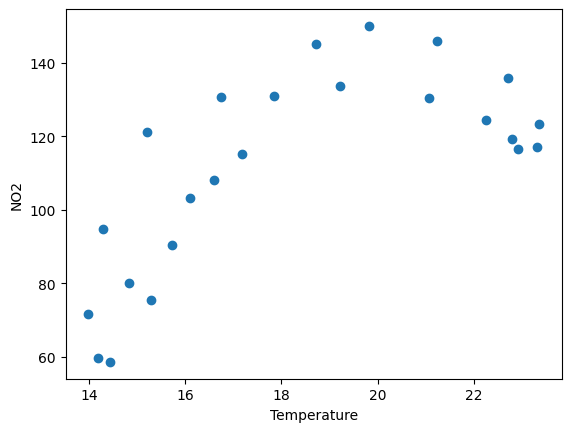
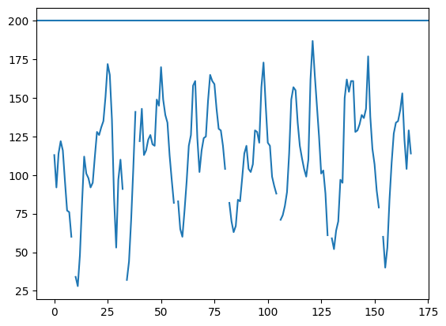
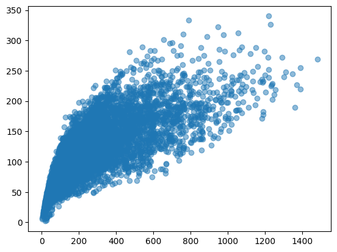
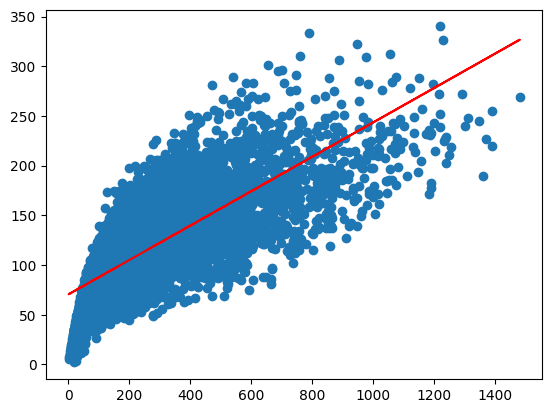

import pandas as pd
import numpy as np
import matplotlib.pyplot as pltCPDS in Python Lab - Real Dataset Analysis with Pandas, NumPy and Matplotlib
UCI Air Quality Dataset
Dataset: UCI Machine Learning Repository - Air Quality
https://archive.ics.uci.edu/dataset/360/air%2Bquality
The UCI dataset contains hourly averaged measurements from an air-quality multisensor device deployed in an Italian city. The measurements were collected from March 2004 to February 2005.
In the original dataset, the value
-200represents a missing observation.
Obtain the real dataset
Question 1
Import:
- Pandas as
pd, - NumPy as
np, - Matplotlib
pyplotasplt.
Question 2
Download the official UCI Air Quality ZIP file and extract AirQualityUCI.csv.
Then read the CSV file into a DataFrame called df.
The original CSV uses:
;as the separator,,as the decimal symbol.
df = pd.read_csv("AirQualityUCI.csv",sep=";",decimal=",")
df--------------------------------------------------------------------------- FileNotFoundError Traceback (most recent call last) /tmp/ipykernel_609/1420193718.py in <cell line: 0>() ----> 1 df = pd.read_csv("AirQualityUCI.csv",sep=";",decimal=",") 2 3 df /usr/local/lib/python3.13/dist-packages/pandas/io/parsers/readers.py in read_csv(filepath_or_buffer, sep, delimiter, header, names, index_col, usecols, dtype, engine, converters, true_values, false_values, skipinitialspace, skiprows, skipfooter, nrows, na_values, keep_default_na, na_filter, verbose, skip_blank_lines, parse_dates, infer_datetime_format, keep_date_col, date_parser, date_format, dayfirst, cache_dates, iterator, chunksize, compression, thousands, decimal, lineterminator, quotechar, quoting, doublequote, escapechar, comment, encoding, encoding_errors, dialect, on_bad_lines, delim_whitespace, low_memory, memory_map, float_precision, storage_options, dtype_backend) 1024 kwds.update(kwds_defaults) 1025 -> 1026 return _read(filepath_or_buffer, kwds) 1027 1028 /usr/local/lib/python3.13/dist-packages/pandas/io/parsers/readers.py in _read(filepath_or_buffer, kwds) 618 619 # Create the parser. --> 620 parser = TextFileReader(filepath_or_buffer, **kwds) 621 622 if chunksize or iterator: /usr/local/lib/python3.13/dist-packages/pandas/io/parsers/readers.py in __init__(self, f, engine, **kwds) 1618 1619 self.handles: IOHandles | None = None -> 1620 self._engine = self._make_engine(f, self.engine) 1621 1622 def close(self) -> None: /usr/local/lib/python3.13/dist-packages/pandas/io/parsers/readers.py in _make_engine(self, f, engine) 1878 if "b" not in mode: 1879 mode += "b" -> 1880 self.handles = get_handle( 1881 f, 1882 mode, /usr/local/lib/python3.13/dist-packages/pandas/io/common.py in get_handle(path_or_buf, mode, encoding, compression, memory_map, is_text, errors, storage_options) 871 if ioargs.encoding and "b" not in ioargs.mode: 872 # Encoding --> 873 handle = open( 874 handle, 875 ioargs.mode, FileNotFoundError: [Errno 2] No such file or directory: 'AirQualityUCI.csv'
next cleaning
Question 3
Remove completely empty columns and completely empty rows.
Then display the first five rows.
df.dropna()df = df.dropna(axis=1,how="all")
df = df.dropna(axis=0,how="all")
df.head()Inspection of the dataset
Question 4
Display:
- the shape of the DataFrame,
- the total number of elements,
- the column names,
- the index,
- the data types.
df.shapedf.sizedf.columns.to_list()df.indexdf.dtypesQuestion 5
Display:
- the first 5 rows,
- the last 5 rows,
- information about the dataset using
info().
df.head()print(df.head())display(df.head())df.info()Question 6
Display descriptive statistics for the numerical columns.
df.describe()Real missing data
\[ \text{A numerical value stored in a file is not always a valid measurement.} \]
UCI states that the value -200 is used to represent missing observations.
Question 7
For each column, count how many entries are equal to -200.
Which variables contain the largest number of such values?
(df==-200).sum()Question 8
Convert every -200 entry into NumPy’s missing-value representation np.nan.
Then count the missing values in every column.
df[df==-200]=np.nandf.iloc[(df==-200).to_numpy()]df.isnull().sum()Question 9
Create a smaller DataFrame called air containing only:
DateTimeCO(GT)C6H6(GT)NOx(GT)NO2(GT)TRHAH
Display its first five rows.
df.columnsair = df[
['Date', 'Time', 'CO(GT)',
'C6H6(GT)', 'NOx(GT)', 'NO2(GT)' ,'T', 'RH',
'AH']]air.head()Question 10
Find the number of missing observations in each column of air.
Also find the percentage of missing values in each column.
\[ \text{percentage missing} = \frac{ \text{number missing}}{ \text{number of rows}} \times 100 \]
air(air.isnull().sum()/air.shape[0])*100Question 11
Create a copy called air_filled.
In this copy:
- replace missing Temperature
Tvalues by the mean Temperature, - replace missing Relative Humidity
RHvalues by the mean Relative Humidity.
Check that those two columns no longer contain missing values.
air_filled = air.copy()air_filled["T"] = air_filled["T"].fillna(air_filled["T"].mean())
air_filled["RH"] = air_filled["RH"].fillna(air_filled["RH"].mean())air_filled['T'].isnull().sum()air_filled['RH'].isnull().sum()Selecting, filtering and sorting real measurements
Question 12
Display only the columns:
Date,Time,CO(GT),NO2(GT).
Show the first 10 rows.
df[["Date","Time","CO(GT)", "NO2(GT)"]].head(10)Question 13
Find all observations for which
\[ NO_2 > 200. \]
Display only:
- Date,
- Time,
- NO2(GT).
df[df['NO2(GT)']>200][["Date","Time","NO2(GT)"]]df.loc[df['NO2(GT)']>200, ["Date", "Time", "NO2(GT)"]]Question 14
Find observations satisfying both
\[ CO > 5 \]
and
\[ NO_2 > 200. \]
Display Date, Time, CO and NO₂.
df.loc[(df['NO2(GT)']>200) & (df["CO(GT)"]>5), ["Date", "Time", "NO2(GT)"]]Question 15
Find observations satisfying either
\[ CO > 5 \]
or
\[ NO_2 > 200. \]
How many observations satisfy this condition?
df.loc[(df['NO2(GT)']>200) | (df["CO(GT)"]>5), ["Date", "Time", "NO2(GT)"]]Question 16
Sort the complete air DataFrame according to NO₂ concentration in descending order.
Display the 10 highest NO₂ observations.
air.sort_values("NO2(GT)", ascending=False)Basic statistical questions
Question 17
For NO2(GT), find:
- mean,
- minimum,
- maximum,
- standard deviation,
- number of non-missing observations.
air["NO2(GT)"].mean(), air["NO2(GT)"].min(),air["NO2(GT)"].std()--------------------------------------------------------------------------- NameError Traceback (most recent call last) /tmp/ipykernel_609/125226296.py in <cell line: 0>() ----> 1 air["NO2(GT)"].mean(), air["NO2(GT)"].min(),air["NO2(GT)"].std() NameError: name 'air' is not defined
air.shape[0]-air["NO2(GT)"].isnull().sum()--------------------------------------------------------------------------- NameError Traceback (most recent call last) /tmp/ipykernel_609/136217374.py in <cell line: 0>() ----> 1 air.shape[0]-air["NO2(GT)"].isnull().sum() NameError: name 'air' is not defined
Question 18
Find the mean values of:
- CO,
- benzene,
- NOx,
- NO₂,
- temperature,
- relative humidity.
air.columns--------------------------------------------------------------------------- NameError Traceback (most recent call last) /tmp/ipykernel_609/486481595.py in <cell line: 0>() ----> 1 air.columns NameError: name 'air' is not defined
air[['CO(GT)', 'C6H6(GT)', 'NOx(GT)', 'NO2(GT)', 'T', 'RH',
'AH']].mean()--------------------------------------------------------------------------- NameError Traceback (most recent call last) /tmp/ipykernel_609/1604038050.py in <cell line: 0>() ----> 1 air[['CO(GT)', 'C6H6(GT)', 'NOx(GT)', 'NO2(GT)', 'T', 'RH', 2 'AH']].mean() NameError: name 'air' is not defined
groupby() with a real time-series dataset
Every day contains repeated measurements at different times we can group sensor measurements by Time.
Question 19
Find the mean NO₂ concentration for every Time value.
Sort the result in descending order and display the five times with the highest mean NO₂.
(air.groupby("Time")["NO2(GT)"].mean().sort_values(ascending=False)).head(10)air--------------------------------------------------------------------------- NameError Traceback (most recent call last) /tmp/ipykernel_609/702212493.py in <cell line: 0>() ----> 1 air NameError: name 'air' is not defined
Question 20
Find the mean CO and mean NO₂ simultaneously for every Time value.
air.groupby("Time")[["CO(GT)","NO2(GT)"]].mean()--------------------------------------------------------------------------- NameError Traceback (most recent call last) /tmp/ipykernel_609/3146981782.py in <cell line: 0>() ----> 1 air.groupby("Time")[["CO(GT)","NO2(GT)"]].mean() NameError: name 'air' is not defined
Question 21
Group the data by Date.
Find the average NO₂ concentration for each date.
Display the 10 dates having the highest average NO₂.
# do by yourselfMatplotlib for this real data
Question 22
Plot the mean NO₂ concentration against Time.
Use:
- a line,
- markers,
- axis labels,
- a title,
- a grid.
dataset = air.groupby("Time")["NO2(GT)"].mean()dataset| NO2(GT) | |
|---|---|
| Time | |
| 00.00.00 | 103.321429 |
| 01.00.00 | 90.502994 |
| 02.00.00 | 75.436747 |
| 03.00.00 | 80.115385 |
| 04.00.00 | 58.620482 |
| 05.00.00 | 59.612613 |
| 06.00.00 | 71.742515 |
| 07.00.00 | 94.709581 |
| 08.00.00 | 121.268293 |
| 09.00.00 | 130.876877 |
| 10.00.00 | 133.678571 |
| 11.00.00 | 130.413174 |
| 12.00.00 | 124.456716 |
| 13.00.00 | 119.312312 |
| 14.00.00 | 116.468468 |
| 15.00.00 | 117.191617 |
| 16.00.00 | 123.310448 |
| 17.00.00 | 135.804154 |
| 18.00.00 | 145.919643 |
| 19.00.00 | 150.091988 |
| 20.00.00 | 145.118694 |
| 21.00.00 | 130.910714 |
| 22.00.00 | 115.095522 |
| 23.00.00 | 108.071642 |
import matplotlib.pyplot as plt
plt.figure(figsize=(25,5))
plt.plot(dataset.index.to_list(), dataset.values)
plt.plot(dataset.index.to_list(), dataset.values, '--*')
plt.xticks(rotation=90)
plt.grid()
plt.xlabel("Time")
plt.ylabel("N02")
plt.show()
max_val_dataset = dataset.max()max_time_dataset = ((dataset.sort_values(ascending=False)).index).to_list()[0]plt.plot(dataset.index.to_list(), dataset.values, '--*')
plt.scatter(max_time_dataset, max_val_dataset,c="red")
plt.xticks(rotation=90)
plt.grid()
plt.xlabel("Time")
plt.ylabel("N02")
plt.show()
Question 23
Find the maximum value of the hourly mean NO₂ concentration and the corresponding Time.
Then mark the maximum point separately on the graph.
Question 24
Create a scatter plot of:
\[ \text{Temperature} \quad \text{vs} \quad NO_2. \]
df.columnsIndex(['Date', 'Time', 'CO(GT)', 'PT08.S1(CO)', 'NMHC(GT)', 'C6H6(GT)',
'PT08.S2(NMHC)', 'NOx(GT)', 'PT08.S3(NOx)', 'NO2(GT)', 'PT08.S4(NO2)',
'PT08.S5(O3)', 'T', 'RH', 'AH'],
dtype='object')plt.scatter(df.groupby("Time")["T"].mean(),
df.groupby("Time")["NO2(GT)"].mean())
plt.xlabel("Temperature")
plt.ylabel("NO2")
Question 25
Take the first 168 observations (approximately one week of hourly data).
Plot NO₂ concentration against observation number and draw a horizontal reference line at 200.
df.head(168)| Date | Time | CO(GT) | PT08.S1(CO) | NMHC(GT) | C6H6(GT) | PT08.S2(NMHC) | NOx(GT) | PT08.S3(NOx) | NO2(GT) | PT08.S4(NO2) | PT08.S5(O3) | T | RH | AH | |
|---|---|---|---|---|---|---|---|---|---|---|---|---|---|---|---|
| 0 | 10/03/2004 | 18.00.00 | 2.6 | 1360.0 | 150.0 | 11.9 | 1046.0 | 166.0 | 1056.0 | 113.0 | 1692.0 | 1268.0 | 13.6 | 48.9 | 0.7578 |
| 1 | 10/03/2004 | 19.00.00 | 2.0 | 1292.0 | 112.0 | 9.4 | 955.0 | 103.0 | 1174.0 | 92.0 | 1559.0 | 972.0 | 13.3 | 47.7 | 0.7255 |
| 2 | 10/03/2004 | 20.00.00 | 2.2 | 1402.0 | 88.0 | 9.0 | 939.0 | 131.0 | 1140.0 | 114.0 | 1555.0 | 1074.0 | 11.9 | 54.0 | 0.7502 |
| 3 | 10/03/2004 | 21.00.00 | 2.2 | 1376.0 | 80.0 | 9.2 | 948.0 | 172.0 | 1092.0 | 122.0 | 1584.0 | 1203.0 | 11.0 | 60.0 | 0.7867 |
| 4 | 10/03/2004 | 22.00.00 | 1.6 | 1272.0 | 51.0 | 6.5 | 836.0 | 131.0 | 1205.0 | 116.0 | 1490.0 | 1110.0 | 11.2 | 59.6 | 0.7888 |
| ... | ... | ... | ... | ... | ... | ... | ... | ... | ... | ... | ... | ... | ... | ... | ... |
| 163 | 17/03/2004 | 13.00.00 | 2.8 | 1452.0 | 188.0 | 15.1 | 1152.0 | 204.0 | 861.0 | 153.0 | 1747.0 | 1508.0 | 25.6 | 25.6 | 0.8254 |
| 164 | 17/03/2004 | 14.00.00 | 2.6 | 1389.0 | 152.0 | 13.7 | 1108.0 | 161.0 | 887.0 | 123.0 | 1712.0 | 1334.0 | 25.9 | 25.9 | 0.8503 |
| 165 | 17/03/2004 | 15.00.00 | 2.0 | 1207.0 | 103.0 | 10.4 | 994.0 | 135.0 | 1013.0 | 104.0 | 1520.0 | 1045.0 | 26.8 | 18.7 | 0.6500 |
| 166 | 17/03/2004 | 16.00.00 | 2.9 | 1365.0 | 193.0 | 15.2 | 1154.0 | 186.0 | 940.0 | 129.0 | 1679.0 | 1221.0 | 29.3 | 15.8 | 0.6309 |
| 167 | 17/03/2004 | 17.00.00 | 2.5 | 1247.0 | 134.0 | 12.3 | 1060.0 | 147.0 | 1032.0 | 114.0 | 1525.0 | 1069.0 | 28.5 | 14.9 | 0.5708 |
168 rows × 15 columns
plt.plot(df["NO2(GT)"][0:168])
plt.axhline(200)
Pandas datas to NumPy
Question 26
Use the following variables as input features:
\[ X = [T,\ RH,\ AH,\ NOx] \]
and use
\[ y = NO_2 \]
as the target.
First remove rows containing a missing value in any of these five variables.
Then create X and y as Pandas objects.
df.columnsIndex(['Date', 'Time', 'CO(GT)', 'PT08.S1(CO)', 'NMHC(GT)', 'C6H6(GT)',
'PT08.S2(NMHC)', 'NOx(GT)', 'PT08.S3(NOx)', 'NO2(GT)', 'PT08.S4(NO2)',
'PT08.S5(O3)', 'T', 'RH', 'AH'],
dtype='object')dataset = df[["T","RH","AH",'NOx(GT)',"NO2(GT)"]].dropna()
X = dataset[["T","RH","AH",'NOx(GT)']]
y = dataset["NO2(GT)"]display(X, y)| T | RH | AH | NOx(GT) | |
|---|---|---|---|---|
| 0 | 13.6 | 48.9 | 0.7578 | 166.0 |
| 1 | 13.3 | 47.7 | 0.7255 | 103.0 |
| 2 | 11.9 | 54.0 | 0.7502 | 131.0 |
| 3 | 11.0 | 60.0 | 0.7867 | 172.0 |
| 4 | 11.2 | 59.6 | 0.7888 | 131.0 |
| ... | ... | ... | ... | ... |
| 9352 | 21.9 | 29.3 | 0.7568 | 472.0 |
| 9353 | 24.3 | 23.7 | 0.7119 | 353.0 |
| 9354 | 26.9 | 18.3 | 0.6406 | 293.0 |
| 9355 | 28.3 | 13.5 | 0.5139 | 235.0 |
| 9356 | 28.5 | 13.1 | 0.5028 | 265.0 |
7393 rows × 4 columns
| NO2(GT) | |
|---|---|
| 0 | 113.0 |
| 1 | 92.0 |
| 2 | 114.0 |
| 3 | 122.0 |
| 4 | 116.0 |
| ... | ... |
| 9352 | 190.0 |
| 9353 | 179.0 |
| 9354 | 175.0 |
| 9355 | 156.0 |
| 9356 | 168.0 |
7393 rows × 1 columns
Question 27
Convert X and y into NumPy arrays.
Print:
- their types,
- their shapes.
X = X.to_numpy()
Xarray([[ 13.6 , 48.9 , 0.7578, 166. ],
[ 13.3 , 47.7 , 0.7255, 103. ],
[ 11.9 , 54. , 0.7502, 131. ],
...,
[ 26.9 , 18.3 , 0.6406, 293. ],
[ 28.3 , 13.5 , 0.5139, 235. ],
[ 28.5 , 13.1 , 0.5028, 265. ]])y = y.to_numpy()yarray([113., 92., 114., ..., 175., 156., 168.])merge()
Question 28
Create:
pollution_df containing
- Date,
- Time,
- CO(GT),
- NO2(GT),
and weather_df containing
- Date,
- Time,
- T,
- RH.
Use only the first 100 rows.
Merge the two DataFrames using both Date and Time.
concat()
Question 29
Create:
part1containing rows 0 to 99,part2containing rows 100 to 199.
Concatenate the two parts vertically.
Check the shape of the resulting DataFrame.
Save the cleaned dataset
Question 30
Save air as
AirQuality_Cleaned.csvwithout writing the Pandas index to the file.
Then read the file back and display its first five rows.
air| Date | Time | CO(GT) | C6H6(GT) | NOx(GT) | NO2(GT) | T | RH | AH | |
|---|---|---|---|---|---|---|---|---|---|
| 0 | 10/03/2004 | 18.00.00 | 2.6 | 11.9 | 166.0 | 113.0 | 13.6 | 48.9 | 0.7578 |
| 1 | 10/03/2004 | 19.00.00 | 2.0 | 9.4 | 103.0 | 92.0 | 13.3 | 47.7 | 0.7255 |
| 2 | 10/03/2004 | 20.00.00 | 2.2 | 9.0 | 131.0 | 114.0 | 11.9 | 54.0 | 0.7502 |
| 3 | 10/03/2004 | 21.00.00 | 2.2 | 9.2 | 172.0 | 122.0 | 11.0 | 60.0 | 0.7867 |
| 4 | 10/03/2004 | 22.00.00 | 1.6 | 6.5 | 131.0 | 116.0 | 11.2 | 59.6 | 0.7888 |
| ... | ... | ... | ... | ... | ... | ... | ... | ... | ... |
| 9352 | 04/04/2005 | 10.00.00 | 3.1 | 13.5 | 472.0 | 190.0 | 21.9 | 29.3 | 0.7568 |
| 9353 | 04/04/2005 | 11.00.00 | 2.4 | 11.4 | 353.0 | 179.0 | 24.3 | 23.7 | 0.7119 |
| 9354 | 04/04/2005 | 12.00.00 | 2.4 | 12.4 | 293.0 | 175.0 | 26.9 | 18.3 | 0.6406 |
| 9355 | 04/04/2005 | 13.00.00 | 2.1 | 9.5 | 235.0 | 156.0 | 28.3 | 13.5 | 0.5139 |
| 9356 | 04/04/2005 | 14.00.00 | 2.2 | 11.9 | 265.0 | 168.0 | 28.5 | 13.1 | 0.5028 |
9357 rows × 9 columns
air.to_csv("AirQuality_Cleaned.csv")Linear Regression
We now use the cleaned UCI Air Quality data to study the relationship between:
- input (x):
NOx(GT) - output (y):
NO2(GT)
We will do it in two ways:
- From scratch using the least-squares formulas.
- Using NumPy with
np.polyfit().
The fitted line has the form
\[ \hat y = b_0 + b_1 x, \]
where
- \(b_0\) is the intercept,
- \(b_1\) is the slope,
- \(\hat y\) is the value given by the fitted line.
air.columnsIndex(['Date', 'Time', 'CO(GT)', 'C6H6(GT)', 'NOx(GT)', 'NO2(GT)', 'T', 'RH',
'AH'],
dtype='object')Question 31
Create a new DataFrame called reg_data containing only
NOx(GT)NO2(GT)
and remove rows containing missing values.
Display the first five rows and print the number of usable observations.
reg_data = air[["NOx(GT)","NO2(GT)"]].dropna()
reg_data| NOx(GT) | NO2(GT) | |
|---|---|---|
| 0 | 166.0 | 113.0 |
| 1 | 103.0 | 92.0 |
| 2 | 131.0 | 114.0 |
| 3 | 172.0 | 122.0 |
| 4 | 131.0 | 116.0 |
| ... | ... | ... |
| 9352 | 472.0 | 190.0 |
| 9353 | 353.0 | 179.0 |
| 9354 | 293.0 | 175.0 |
| 9355 | 235.0 | 156.0 |
| 9356 | 265.0 | 168.0 |
7715 rows × 2 columns
Question 32
Before fitting any line, create a scatter plot of
\[ x = NO_x \qquad \text{and} \qquad y = NO_2. \]
x = reg_data["NOx(GT)"].to_numpy()
y = reg_data["NO2(GT)"].to_numpy()
plt.scatter(x,y,alpha=0.5)
Linear regression from scratch
For observed points
\[ (x_1,y_1),(x_2,y_2),\ldots,(x_n,y_n), \]
we want a line
\[ \hat y = b_0+b_1x \]
that makes the vertical errors (residuals)
\[ e_i=y_i-\hat y_i \]
as small as possible. The least-squares method chooses \(b_0\) and \(b_1\) to minimize
\[ \sum_{i=1}^{n}(y_i-\hat y_i)^2. \]
For simple linear regression,
\[ b_1= \frac{\sum (x_i-\bar{x})(y_i-\bar{y})} {\sum (x_i-\bar{x})^2}, \]
and
\[ b_0=\bar{y}-b_1\bar{x}. \]
Question 33
Convert the two columns to NumPy arrays called x and y.
Then calculate
\[ \bar{x} \quad\text{and}\quad \bar{y}. \]
x_bar = np.mean(x)
y_bar = np.mean(y)x_bar, y_bar(np.float64(246.93713545042127), np.float64(113.09125081011017))Question 34
Calculate the slope \(b_1\) from scratch using
\[ b_1= \frac{\sum (x_i-\bar{x})(y_i-\bar{y})} {\sum (x_i-\bar{x})^2}. \]
b1 = np.sum((x-x_bar)*(y-y_bar))/np.sum((x-x_bar)**2)Question 35
Calculate the intercept
\[ b_0=\bar{y}-b_1\bar{x}. \]
Then print the fitted linear-regression equation.
b0 = y_bar - b1*x_barb0, b1(np.float64(70.3003999488094), np.float64(0.17328641471137532))Question 36
For every observed \(x\)-value, calculate the corresponding value on the fitted line:
\[ \hat y=b_0+b_1x. \]
Store these values in y_hat.
y_hat = b0 + b1*xy_hatarray([ 99.06594479, 88.14890066, 93.00092028, ..., 121.07331946,
111.02270741, 116.22129985])Question 37
Draw the original scatter plot and place the regression line on the same figure.
plt.scatter(x,y)
plt.plot(x,y_hat, c = "red")
What is a residual?
For each observation,
\[ \text{residual} = \text{observed value} - \text{fitted value} = y_i-\hat y_i. \]
A point lying exactly on the regression line has residual (0).
A positive residual means the observed point lies above the line.
A negative residual means it lies below the line.
Question 38
Calculate the residuals and display the first ten.
Then calculate the sum of squared errors
\[ SSE=\sum (y_i-\hat y_i)^2. \]
SSE = np.sum((y-y_hat)**2)
SSEnp.float64(7538035.274062596)Question 39
Calculate the coefficient of determination (It is also called \(R^2\)-value-an important value in linear regression)
\[ R^2 = 1- \frac{\sum (y_i-\hat y_i)^2} {\sum (y_i-\bar y)^2}. \]
Interpretation:
- \(R^2\) near 1 means the straight line explains a large proportion of the variation in \(y\).
- \(R^2\) near 0 means the straight-line relationship explains little of the variation.
R2 = 1- np.sum((y-y_hat)**2)/np.sum((y-y_bar)**2)R2np.float64(0.582338522372956)NumPy can calculate the coefficients of the best-fitting polynomial.
For a straight line we use degree (1):
np.polyfit(x, y, 1)It returns the slope and intercept.
Question 40
Use np.polyfit() to calculate the regression line.
Compare its slope and intercept with the values obtained manually.
np.polyfit(x,y,1)array([ 0.17328641, 70.30039995])Question 41
Use the NumPy coefficients to draw the regression line again.
xarray([166., 103., 131., ..., 293., 235., 265.])np.polyval(np.polyfit(x,y,1),x)array([ 99.06594479, 88.14890066, 93.00092028, ..., 121.07331946,
111.02270741, 116.22129985])Question 42
Take
\[ NO_x=200. \]
Use the fitted line to calculate the corresponding model-based NO₂ value.
Then mark this point on the regression graph.
Multiple Linear Regression
In simple linear regression, we used only one input variable:
\[ NO_x \]
to predict
\[ NO_2. \]
But in real problems, an output usually depends on several variables simultaneously.
We now use
\[ X= [T,\ RH,\ AH,\ NO_x] \]
to predict
\[ y=NO_2. \]
Thus, instead of fitting a line of the form
\[ \hat y=b_0+b_1x, \]
we fit a model of the form
\[ \hat y = b_0 +b_1x_1 +b_2x_2 +b_3x_3 +b_4x_4. \]
For our air-quality data,
\[ \widehat{NO_2} = b_0 +b_1 T +b_2 RH +b_3 AH +b_4 NO_x. \]
Here:
- \(b_0\) is the intercept,
- \(b_1\) measures the contribution of Temperature,
- \(b_2\) measures the contribution of Relative Humidity,
- \(b_3\) measures the contribution of Absolute Humidity,
- \(b_4\) measures the contribution of NOx.
Question 43
Create a new DataFrame called mlr_data containing only
TRHAHNOx(GT)NO2(GT)
Remove all rows containing missing values.
Question 44
Separate the data into
\[ X= [T,\ RH,\ AH,\ NO_x] \]
and
\[ y=NO_2. \]
Keep them as Pandas objects first.
Display the first five rows of \(X\) and the first five values of \(y\).
Question 45
Convert X and y into NumPy arrays called
X_np
and
y_np
respectively.
Print their shapes.
Multiple linear regression from scratch
For one observation, the model is
\[ \hat y_i = b_0 +b_1x_{i1} +b_2x_{i2} +b_3x_{i3} +b_4x_{i4}. \]
Instead of writing every equation separately, we can write all observations simultaneously using matrices. Define
\[ \mathbf{X} = \begin{bmatrix} 1 & x_{11} & x_{12} & x_{13} & x_{14}\\ 1 & x_{21} & x_{22} & x_{23} & x_{24}\\ \vdots & \vdots & \vdots & \vdots & \vdots\\ 1 & x_{n1} & x_{n2} & x_{n3} & x_{n4} \end{bmatrix} \]
and
\[ \boldsymbol{\beta} = \begin{bmatrix} b_0\\ b_1\\ b_2\\ b_3\\ b_4 \end{bmatrix}. \]
Then
\[ \hat{\mathbf y} = \mathbf X\boldsymbol{\beta}. \]
The first column consists entirely of \(1\)’s because it corresponds to the intercept \(b_0\).
Question 46
Create the design matrix by adding a column of ones to X_np. Call the resulting matrix X_design. Display its first five rows and print its shape.
The first column now corresponds to the intercept. Therefore, the columns represent
\[ [1,\ T,\ RH,\ AH,\ NO_x]. \]
Least-squares idea
As in simple linear regression, the residual for observation \(i\) is
\[ e_i=y_i-\hat y_i. \]
The least-squares method chooses the coefficients so that
\[ SSE = \sum_{i=1}^{n}(y_i-\hat y_i)^2 \]
is as small as possible. In matrix form,
\[ SSE = (\mathbf y-\mathbf X\boldsymbol{\beta})^T (\mathbf y-\mathbf X\boldsymbol{\beta}). \]
Minimizing this quantity gives the normal equations
\[ \mathbf X^T\mathbf X\boldsymbol{\beta} = \mathbf X^T\mathbf y. \]
Hence,
\[ \boldsymbol{\beta} = (\mathbf X^T\mathbf X)^{-1} \mathbf X^T\mathbf y. \]
Question 47
Calculate
\[ \mathbf X^T\mathbf X \]
and
\[ \mathbf X^T\mathbf y. \]
Print their shapes.
Question 48
Use the normal-equation formula
\[ \boldsymbol{\beta} = (\mathbf X^T\mathbf X)^{-1} \mathbf X^T\mathbf y \]
to calculate the regression coefficients.
Store them in beta.
The entries of beta are
\[ [b_0,b_1,b_2,b_3,b_4]. \]
Question 49
Separate the coefficients into
b0, b1, b2, b3, b4
and print the fitted multiple-linear-regression equation
\[ \widehat{NO_2} = b_0+b_1T+b_2RH+b_3AH+b_4NO_x. \]
Suppose the fitted model is
\[ \widehat{NO_2} = b_0+b_1T+b_2RH+b_3AH+b_4NO_x. \]
The interpretation of \(b_1\) is different from simple linear regression.
It tells us the estimated change in \(NO_2\) when \(T\) increases by one unit while the other input variables are kept fixed.
Similarly, \(b_4\) describes the estimated change associated with one unit increase in \(NO_x\), while \(T\), \(RH\), and \(AH\) are kept fixed.
Question 50
Use the fitted coefficients to calculate the predicted NO₂ value for every observation.
Use
\[ \hat{\mathbf y} = \mathbf X\boldsymbol{\beta}. \]
Store the result in y_hat_mlr.
Question 51
Calculate the residuals
\[ e_i=y_i-\hat y_i. \]
Display the first ten residuals.
Then calculate
\[ SSE = \sum_{i=1}^{n}(y_i-\hat y_i)^2. \]
Question 52
Calculate the coefficient of determination
\[ R^2 = 1- \frac{ \sum(y_i-\hat y_i)^2 }{ \sum(y_i-\bar y)^2 }. \]
Interpret the result.
The \(R^2\)-value measures the proportion of variation in NO₂ explained by the regression model. For example,
\[ R^2=0.80 \]
would mean that approximately \(80\%\) of the variation in the observed NO₂ values is explained by the variables included in the model.
Is multiple regression better than simple regression?
Previously we predicted NO₂ using only NOx. Now we are using
\[ T,\ RH,\ AH,\ NO_x. \]
To make a fair comparison, both models must be fitted using exactly the same observations.
Question 53
Using the same mlr_data, fit a simple linear regression using only
\[ NO_x \]
to predict
\[ NO_2. \]
Calculate its \(R^2\)-value and compare it with the multiple-regression \(R^2\).
An important observation is that adding more variables can increase \(R^2\). But this does not automatically mean that every added variable is useful.
Actual values versus predicted values
A useful way to inspect a regression model is to compare
\[ y \]
with
\[ \hat y. \]
For a perfect prediction,
\[ y=\hat y. \]
Therefore, all points would lie on the diagonal line
\[ y=x. \]
Question 54
Create a scatter plot with
- actual NO₂ values on the horizontal axis,
- predicted NO₂ values on the vertical axis.
Also draw the reference line
\[ y=x. \]
NumPy’s built-in least-squares solver
Instead of explicitly calculating
\[ (\mathbf X^T\mathbf X)^{-1}, \]
NumPy can solve the least-squares problem directly using
np.linalg.lstsq()Question 55
Use
np.linalg.lstsq()to calculate the regression coefficients.
Multiple linear regression using a machine-learning library
The same model can be fitted directly using LinearRegression from scikit-learn.
Question 56
Import LinearRegression from sklearn.linear_model.
Fit a multiple linear regression model using
\[ [T,\ RH,\ AH,\ NO_x] \]
to predict
\[ NO_2. \]
Print the intercept and coefficients.
The coefficients correspond to the columns
\[ [T,\ RH,\ AH,\ NO_x]. \]
Question 57
Use the fitted LinearRegression model to predict NO₂ for all observations.
Then calculate its \(R^2\)-value using
model.score(X, y)and compare it with the \(R^2\)-value calculated manually.
Making a prediction
Suppose atmospheric conditions are
\[ T=20, \qquad RH=50, \qquad AH=1, \qquad NO_x=200. \]
The fitted regression model can be used to estimate the corresponding NO₂ concentration.
Question 58
Use the multiple linear regression model to predict NO₂ when
\[ T=20, \qquad RH=50, \qquad AH=1, \qquad NO_x=200. \]
First calculate the prediction manually from
\[ \widehat{NO_2} = b_0+b_1T+b_2RH+b_3AH+b_4NO_x. \]
Then verify the answer using model.predict().